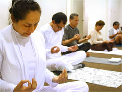

¿Conoces la Meditación?
Meditar es hacer un viaje, pero uno que va hacia nuestro interior. Y en ese viaje, cuando es frecuente, se van experimentando distintas transformaciones positivas de todo tipo. No es sencillo describirlo, y mejor sería experimentarlo en la práctica.
La Meditación es un componente fundamental del Yoga. Una definición de hace unos dos mil años afirmaba que "El Yoga es la supresión de los remolinos de la mente" ("Sutras" de Patanjali). Y eso es precisamente lo que significa la meditación:
Controlar, a través de la concentración en algún objeto, la tendencia de la mente a producir pensamientos sin parar.
Muchos pensamientos suelen ser intrascendentes, pero también abundan los que nos generan conflicto. Ese es el caso de los recuerdos de hechos y sentimientos desagradables, o de los miedos que tenemos hacia el futuro. Desgraciadamente, a la mente le gusta mucho "rumiar" estos, muchas veces y mucho tiempo. Esta carga negativa, así como las exigencias y problemas de la vida diaria nos genera estrés, así como ansiedad, depresión o ira.
El estrés, mecanismo fundamental para la protección de los seres humanos y animales; se convierte en enemigo cuando se hace permanente, como sucede en el caso de muchísima gente y por diversos factores. Y sus acciones se deben en gran parte a las hormonas que esta condición produce.
El cortisol reduce la inmunidad, debilitando la defensa contra infecciones y cáncer. Además, aumenta el volumen de grasas y azúcares en la sangre e incrementa la agregación plaquetaria –promoviendo trombos-; la adrenalina aumenta la presión arterial y la frecuencia cardiaca. Estos efectos combinados tienen mucho que ver con hipertensión, infartos al corazón y accidentes cerebro-vasculares (ACV).
También, se conoce que tiene repercusiones en otros problemas como diabetes, gastritis y dolores en articulaciones. Se une a problemas emocionales como depresión, ansiedad o pánico. Además, con estrés, tendemos a comer y dormir mal, a adquirir hábitos nocivos y a ser menos racionales y más descuidados; lo cual sigue empeorando la situación de salud.
Descubrimientos más recientes han mostrado que el estrés actúa, además, disminuyendo la edad esperada de las personas. Este efecto se da porque reduce la cantidad de veces que una célula puede desarrollarse por su acción de acortamiento de los telómeros, que forman parte de los cromosomas.
La meditación es un camino probado para la reducción del estrés y para ir deshaciéndonos de los recuerdos y sentimientos acumulados que nos generan sufrimiento, como la depresión o la ansiedad. Con ella, mejoramos poco a poco el cuerpo y la mente.
Pero, también, para hacer que aflore el bienestar y la alegría que solíamos tener cuando pequeños, los que han sido "tapados" cuando crecimos.
Hay varias formas de meditar, en silencio, com mantras, visualizaciones, etc. que se pueden realizar en casa o en cualquier sitio. La más simple: Concentrarse en la respiración, por unos minutos.
Una meditación sencilla
Si la quieres probar, sólo tienes que sentarte (en una silla o como la figura) con la espalda recta, cerrar los ojos, respirar sólo por la nariz y concentrarte fijamente en ella. Si te distraeas, no hay problema, sólo vuelves a tu respiración. Poco a poco, tu concentración irá mejorando más y más. Puede ser que al principio sientas cierta impaciencia, pero ella desaparece, al segundo o tercer día.
Trata de hacerlo primero cinco o diez minutos y de ir aumentando hasta una hora diaria (incluso repartido durante el día). Vas a ver cómo, en poco tiempo, vas a sentir cambios interesantes...
VITAL YOGA tiene el objetivo de difundir esta técnica milenaria entre las personas, grupos y organizaciones de todo tipo para demostrar, en la práctica, su significado e importancia para conseguir una vida mejor y más plena.
Contacto: Presione aquí


VITAL YOGA ofrece, además de sus actividades públicas, programas especiales para grupos, empresas y otras organizaciones. Estos serán diseñados en forma personalizada, de acuerdo a las necesidades de los interesados.